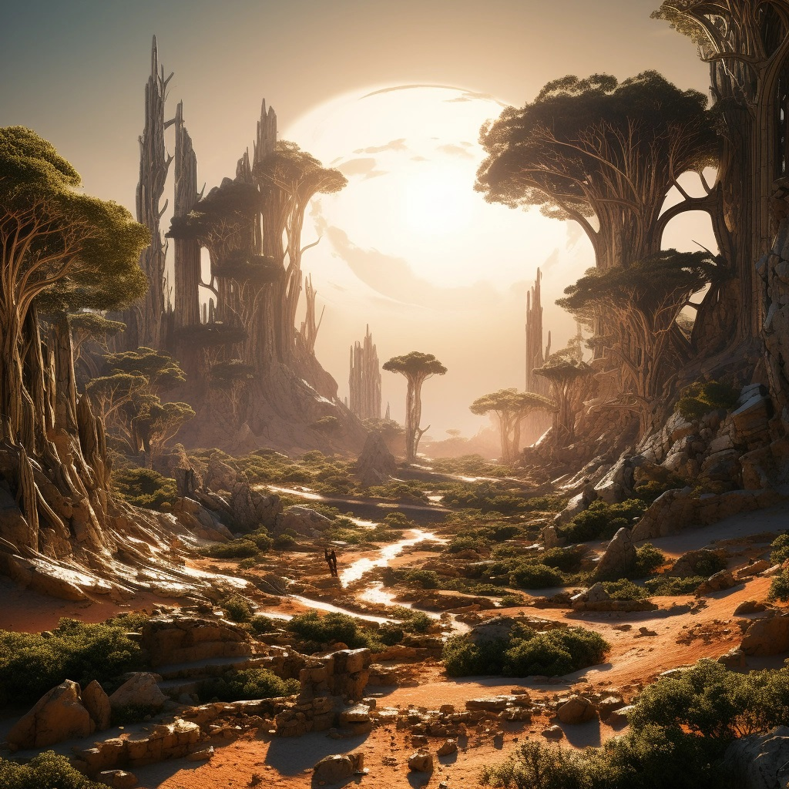
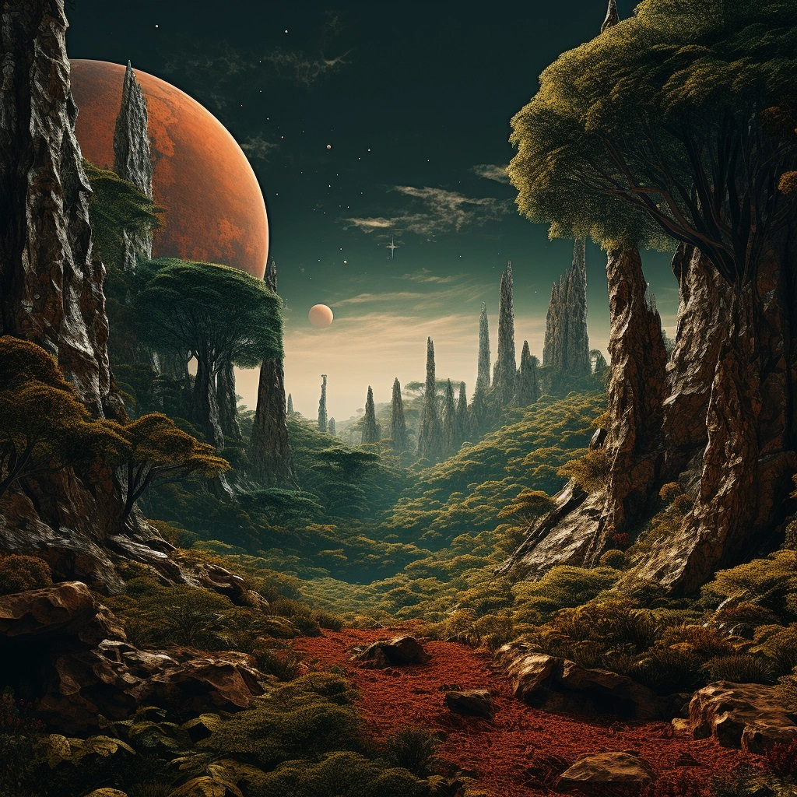
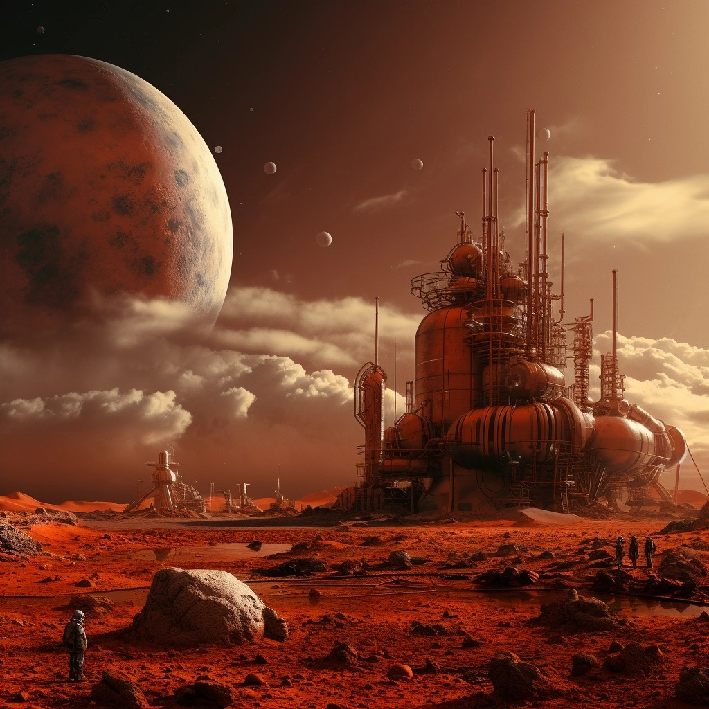
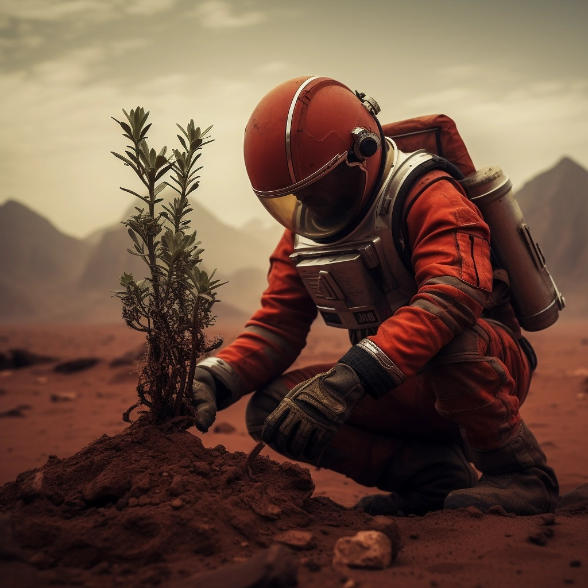

Mars on neljäs planeetta Auringosta ja toiseksi pienin planeetta aurinkokunnassa. Se on tunnettu punaisesta väristään, joka johtuu sen maaperän rautaoksidista. Se on myös kiehtova kohde tutkimukselle ja tutkimusmatkailulle, sillä se on ainoa planeetta, jolla on todisteita menneestä ja nykyisestä vedestä.
Mars on kuitenkin paljon enemmän kuin vain punainen kiviplaneetta. Se on myös planeetta, jolla on oma ainutlaatuinen elämän muoto: Marsin kasvit. Marsin kasvit ovat erityisiä kasveja, jotka on suunniteltu ja muokattu selviytymään Marsin ankarissa olosuhteissa. Ne ovat osa Marsin siirtokunnan elintärkeää ekosysteemiä, joka tuottaa happea, ruokaa ja lääkkeitä asukkaille.

Marsin kasvit ovat kehittyneet erilaisiksi kuin Maan kasvit monin tavoin. Ne ovat sopeutuneet Marsin alhaiseen ilmanpaineeseen, kylmään lämpötilaan, korkeaan säteilyyn ja vähäiseen veteen. Ne ovat myös oppineet hyödyntämään Marsin maaperän mineraaleja ja kemikaaleja, kuten rautaa, rikkiä ja perklooria.


